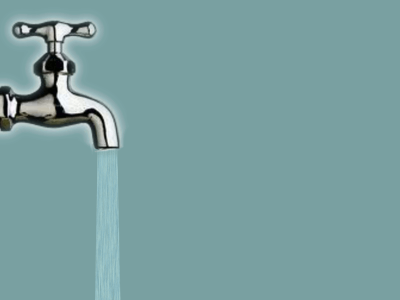
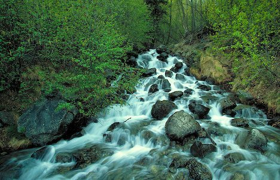
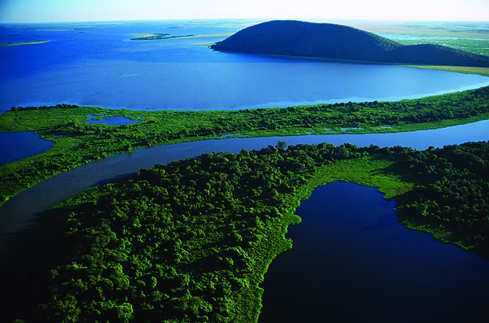
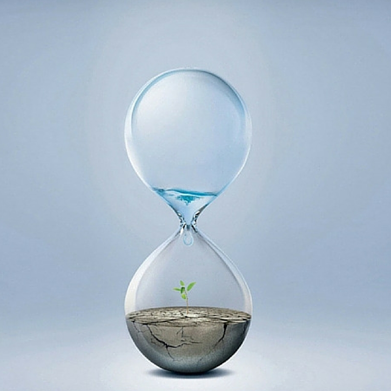
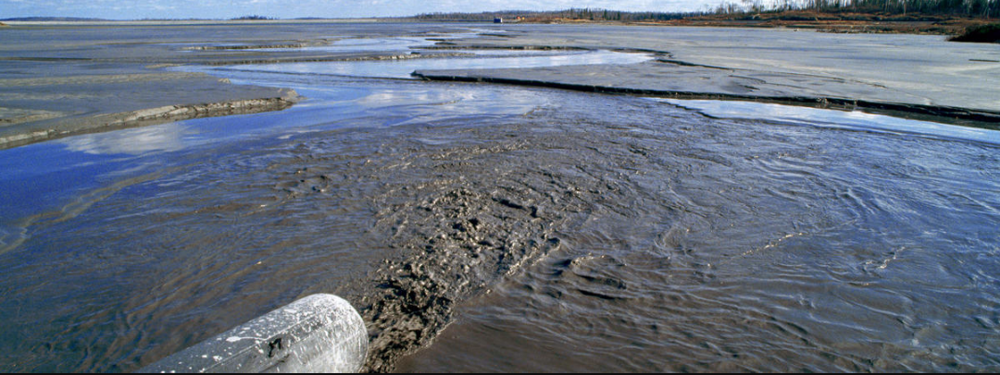
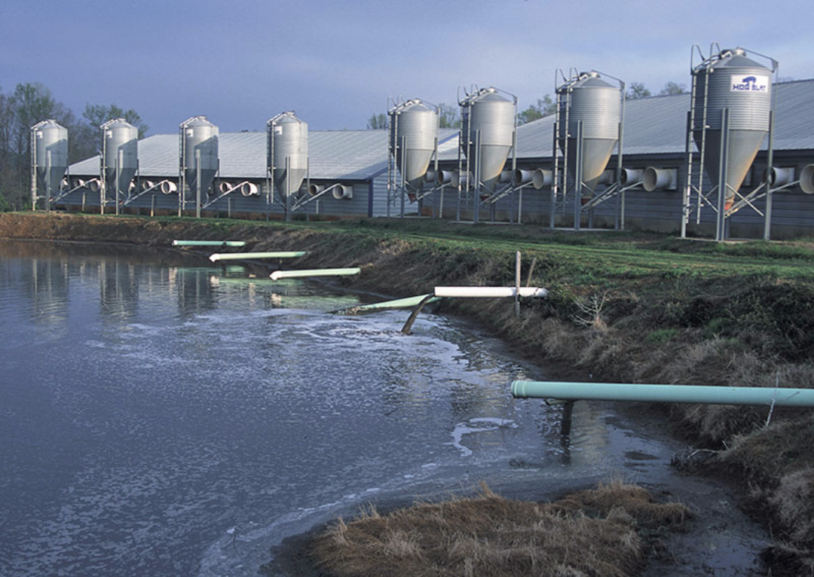
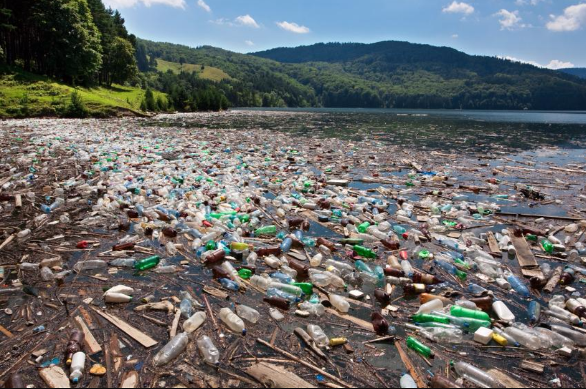
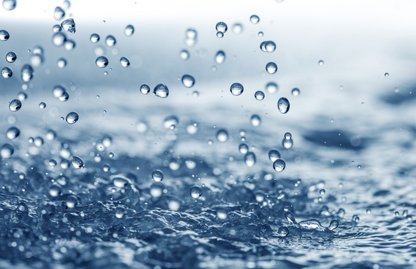

|  |  |  |  |
Water is essential for human suvival and well-being and important to many sectors of the economy. However, resorces are irreglarly distributed in space and tim, and they are under pressure due to human actiity. Water coversabout three-quatrers, seventy one percent of Earth's surface and is a necessary element for life. During their constant cycling between land, the oceans, and the atmosphere, water molecules pass repeatedly through solid, liquid, and gaseous phases (ice,liquid water, and water vapor), but the total supply remains fairly constant. A water molecule can travel to many parts of the globe as it cycles. Water absorbs a lot of energy when it changes its state from loquid to gas, Even though the temperature of the water vapor may not increase when it evaporates from liquid water, this vapor now contains more energy, which is referred to as latent heat.
The world's water exits naturally in dirrerent forms and locations: in the air, on thesurface, below the ground, and in the oceans. Fresh water accounts for only 2.5% of the Earth's water,and most ofit is frozen in glaciers and icecaps. The remaining unfrozen freshwater is mainly found as groundwater, with only a small fraction present above ground or in the air. Looking at how water moves through the Earth's water cycle helps us understand how it interacts with the environment and how uch is available for human use.
Water resources face a host of serious threats, all caused primarily by human activity. They include pollution, climate change, urban growth, and landscape changes such as deforestation. Each of them has its own specific impact, usually directly on ecosystems and in turn on water resources. Inadequately managed, activities like farming, forest-clearing, road-building, and mining can lead to too much soil and suspended particles ending up in rivers ( sedimentation ). This damages aquatic ecoststems, impairs water quality and hinders inland shipping.
Climate change appears to increase existing pressures, for example in areas already suffering from water shortages. Land and mountain glaciers have been shrinking more rapidly in recent years. Extreme weather events stemming from global warming, such as stroms and floods, are likely to become more frequent and severe. However, based on current knowledge, scientists can only make general predictions about the impact of climate change on water resources.
Water pollution can be definede in many ways. Usually, it means one or more substances have built up in water to such an extent that they cause problems for animals or people. Oceans, lakes, rivers, and other inland waters can naturally clean up a certain amount of pollution by dispersing it harmlessly. If you poured a cup of black ink into a river, the ink would quickly disappear into the river's much larger volume of clean water. The ink would still be there in the river, but in such a low concentration that you would not be able to see it. At such low levels, the chemicals in the ink probably would not present any real problem. However, if you poured gallons of ink into the river every few seconds through a pipe, the river wwould quickly turn black. The chemicals in the ink could very quickly have an effect on the quality of the water. This, in turn, could affect the health of all the plants, animals, and humans whose lives depend on the river. Thus, water pollution is all about quantities: how much of a pollution substance is released and how big a volume of water it is released into. A small quantity of a toxic chemical may have little impact if it is spilled into the ocean from a ship. But the same amount of the same chemical can have a much bigger impact pumped into a lake or river, where there is less cclean water to disperse it.
When we think of Earth's water resources, we think of huge oceans, lakes, and rivers. Water resources like these are called surface waters. The most obvious type of water pollution affects surface waters. For example, a spill from an oil tanker creates an oil slick that can affect a vast area of the ocean.
Sometimes pollution that enters the environment in one place has an effect hundreds or even thousands of miles away. This is known as transboundary pollution. One example is the way radioactive waste travels through the oceans from nuclear reprocessing plants in England and France to nearby countries such as Ireland and Norway.
Most water pollution doesn't begin in the water itself. Take the oceans: around 80 percent of ocean pollution enters our seas from the land. Virtually any human activity can have an effect on the quality of our water environment. When farmers fertilize the fields, the chemicals they use are gradually washed by rain into the groundwater or surface waters nearby. Sometimes the causes of water pollution are quite surprising. Chemicals released by smokestacks (chinmeys) can enter the atmosphere and then fall back to earth as rain, entering seas, rivers, and lakes and causing water pollution. That's called atmospheric deposition. Water pollution has many different causes and this is one of the reasons why it is such a difficult problem to solve.
With billions of people on the planet, disposing of sewage waste is a major problem. According to 2015 and 2016 figures from the World Health Organization, some 663 million people ( 9 percent of the world's population) don't have access to safe drinking water, while 204 billion (40 percent of the world's population) don't have proper sanitation (hygienic toilet facilities); relatively little progress has been nade on improving global sanitation in the last decade.
The New River that crosses the border from Mexico into California once carried with it 20-25 million gallons (76-95 million liters) of raw sewage each day; a new waste water plant on the US-Mexico border, completed in 2007, substaintially solved that problem. In theory, sewage is a comletely natural substance that should be broken down harmlessly in the environment: 90 percent of sewage is water!
Suitably treated abd ysed ub niderate qyabtutuesm sewage cab be a fertukuzer: it returns important nutrients to the environment, such as nitrogen and phosphorus, which plants and animals need for growth. Thetrouble is, sewage is often released in much greater quantities than the natural environment can cope with. Chemical fertilizers used by farmers also add nutrients to the soil, which drain into rivers and seas and add to the fertilizing effect of the sewage. Together, sewage and fertilizers can cause amassive increase in the growth of algae or plankton that overwhelms huge areas ofoceans, lakes, or rivers. This is known as a harmful algal bloom ( also known as an HAB or red tide, because it can turn the water red). It is harmful because it removes oxygen from the water that kills other forms of life, leading to what is known as a dead zone. The Gulf of Mexico has one of the world's most spectacular dead zones.
A few statistics illustrate the scale of the problem that waste water (chemicals washed down drains and discharged from factories) can cause. Around half of all ocean pollutions is created by sewage and aste water. Each year, the world generates perhaps 5-10 billion tons of industrial waset, much of which is pumped untreated int rivers, oceans, and other waterways. In the United States alone, around 400,000 factories take clean water from rivers, and many pump polluted waters back in their place.
Factories are point sources of water pollution, but quite a lot of water is polluted by ordinary people from nonpoint sources; this is how ordinary water becomes waste water in the first place. Highways are typically covered with a cocktail of toxic chemicals-everything from spilledfuel and brake fluids to bits of worn tires (themselves made from chemical additives) and exhaust emissions. When it rains , these chemicals wash into drains and rivers. Some highway runoff runs away into drains; others can pollute groundwater or accumualte in the land next to a road, making it increasingly toxic as the years go by.
Another kind of toxic pollution comes from heavy metals, such as lead, cadmium, and mercury. Lead was once commonly used in gasoline(petrol), though its use is now restircted in some countries. MErcury and cadmium are still used in batteries(though some brands now use other metals instead). Until recently, a highly toxic chemical called tributyltin(TBT) was used in paints to protect boats from the ravaging effects of the oceans.
People view radioactive waste with great alarm-and for good reason. At high enough concentrations it can kill; in lower concentrations it can cause cancers and other illnesses. The biggest sources of radioactive pollution in Europe are two factories that reprocess waste fuel from nuclear power plants: Sellafield on the north-west coast of Britain and Cap La Hague on the north coast of France. Both discharge radioactive waste water into the sea, which ocean currents then carry around the world. Countries such as Norway, which lie downstream from Britain, receive significant doses of radioactive pollution from Sellafield.
Plastic is light and floats easily so it can travel enormous distances across the oceans; most plastics are not biodegradable (they do not break down naturally in the environment), which means that things like plastic bottle tops can survive in the marine environment for a long time. ( A plastic bottle can survive and estimated 450 years in the ocean and plastic fishing line can last up to 600 years.)
While plastics are not toxic in quite the same way as poisonous chemicals, they nevertheless present a major hazard to seabirds, fish, and other marine creatures. For example, plastic fishing lines and other debris can strangle or choke fish. ( This is sometimes called ghost fishing.) About half of all the world's seabird species are known to have eaten plastic residues.
Most people's idea of water pollution involves things like sewage, toxic metals, or oil slicks, but pollution can be biological as well as chemical. In some parts of the world, alien species are a major problem. Alien species (sometimes known as invasive species) are animals or plants from one region that have been introduced into a different ecosystem where they do not belong. Outside their normal environment, they have no natural predators, so they repidly run wild, crowding out the usual animals or plants that thrive there. Common examples of alien species include zebra messels in the Geaat Lakes of the USA, which were carried there from Europe by ballast water. The Mediterranean Sea has been invaded by a kind of alien algae called Caulerpa taxifolia. In the Black Sea, an alien jellyfish called Mnemiopsis Leidyi reduced fish stocks by 90 percent after arriving in ballast water.
Some people believe pollution is an inescapable result of human activity: they argue that if we want to have factories, cities, ships, cars, oil, and coastal resorts, some degree of pollution is almost certain to result. In other words, pollution is a necessary evil that people must put up with if they want to make progress. Fortunately, not everyone agrees with this view. One reason people have woken up to the prolem of pollution is that it brings costs of its own that undermine any economic benefits that come about by polluting.
Sewage is another good example of how pollution can affect us all. Sewage discharged into coastal waters can wash up on beaches and cause a health hazard. People who bathe or surf in the water can fall ill if they swallow polluted water-yet sewage can grow near the shore. People who eat poisoned shellfish risk suffering from an acute- and sometimes fatal-illness called paralytic shellfish poisoning. Shellfish is no longer caught along many shores because it is simply too polluted with sewage or toxic chemical wastes that have discharged from the land nearby.
Pollution matters because it harms th environment on which people depend. The environment is not something distant and separate from our lives. It's not a pretty shoreline hundreds of miles from our homes or a wilderness landscape that we see only on TV. The environment is everything that surrounds us that gives us life and health. Destroying the environment ultimately reduces the quality of our own lives - and that, most selfishly, is why pollution should matter to all of us.
|  |  |  |  |
Our water resourcs are under pressure. More reliable information is still needed regarding the quality and quantity of available water, and how this availability varies in time and from place to place. Human activities affect the water cycle in many ways, which need to be understood and quantified to manage water resources responsibly and sustainably.
It has become evident that: